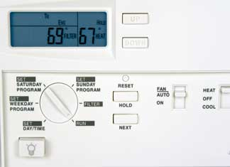

The Earth Day celebrations are over, and you’ve got an eco-hangover (just a little too much green for one day). What to do? Ease into your next green project: Install a programmable thermostat.
Replacing your old thermostat with a programmable model can reduce the amount of energy used to heat and cool your home by as much as 15 percent (if you’re not already adjusting your thermostat manually a few times each day). They’re super easy to install, and Energy Star ratings can help select the most effective models. Many programmable thermostats cost less than $90, so you’re likely to recoup your investment quickly in lower energy bills.
Before choosing a new thermostat, check how many wires are attached to your current one. The wires should be smaller than wires running to electrical boxes (like those of outlets and light switches). If they’re heavier wires, they carry higher voltage - so you’ll want to hire an electrician for the job. This is usually the case only if you have electric baseboard heat.
Turn off the power to the furnace at the circuit box (or remove the fuse).
Remove the old thermostat, being careful to label each wire with a piece of masking tape as you remove it. There should be a letter near the place each wire was attached. Tape the wires to the wall so you don’t lose them inside the wall.
The new thermostat may have a template to help you mark the wall where screws will attach the thermostat. Or you may need to hold the base plate of the new thermostat against the wall and mark (with a pencil) the place you need to drill holes. Unlike thermostats that operate with mercury, leveling a digital thermostat isn’t necessary, but it looks better.
Drill holes in the drywall or plaster and tap plastic anchors (usually provided with the thermostat) into the holes so screws will hold securely. Before drilling the holes as large as recommended in the directions, use a smaller bit in case you hit a stud - the holes won’t need to be as large for the screws as for the plastic anchors, which are unnecessary if the screws will be driven into a stud.
Before attaching the base plate, pull the wires through the hole in the base plate so they’re not pinched behind it. After you’ve secured the base plate, connect the wires to the thermostat according to the manufacturer’s instructions. Remember, if the wires are attached to screws, you’ll tighten them in a clockwise direction, so wrap the wire around the screw posts clockwise. In some instances, the wires may be connected to the base plate, and the thermostat will plug into the base plate.
If the thermostat requires batteries, install those and attach the thermostat to the base plate. Then turn on the circuit breaker (or put the fuse in) and check that the thermostat is working. If the old thermostat contains mercury, check with local waste management or recycling authorities to find the proper place to dispose of it.
Last but not least, program the thermostat according to the manufacturer’s instructions and your particular situation. If you don’t program the thermostat so your furnace or air conditioner runs less while you’re away from the house and/or sleeping, you won’t save energy or money! Doing so is easy for most models. Even if you can’t program your VCR, you can program a thermostat.
For more ways to reduce the amount of energy you use for home climate control, read Slash Your Heating Bills!|
 ISTOCKPHOTO/FRED DIMMICK Programmable thermostats are a great investment. In the first year after installation, you can reduce your energy bills by more than you paid for the thermostat. |
|
|